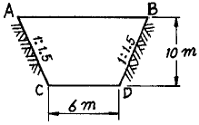
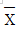
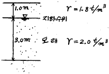
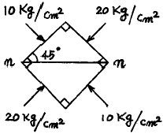
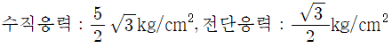
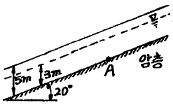

건설재료시험기사 (2007-05-13 기출문제)
1과목: 콘크리트공학
1. 프리텐션방식의 프리스트레싱을 할 때 콘크리트의 압축강도는 최소 몇 MPa이상이어야 하는가?
- 25
- 30
- 35
- 40
(정답률: 알수없음)

2. 콘크리트 표면의 물의 증발속도가 블리딩 속도보다 빠른 경우와 같이 급속한 수분증발이 일어나는 경우에 콘크리트 표면에 발생하는 균열은?
- 소성수축균열
- 침하균열
- 온도균열
- 건조수축균열
(정답률: 알수없음)
3. 콘크리트의 시방 배합에 대한 설명으로 옳은 것은?
- 배합에 사용된 골재는 표면수 및 흡수량을 고려하여 보정한 배합이다.
- 실제 현장의 조건을 충분히 고려하여 보정한 배합이다.
- 시방서 기준을 따르며 현장 조건도 고려한 배합이다.
- 소정의 품질을 갖는 콘크리트가 얻어지도록 된 배합으로서 시방서 또는 책임기술자가 지시한 배합을 말한다.
(정답률: 알수없음)
4. 프리스트레스트 콘크리트의 원리를 설명하는 3가지 방법에 속하지 않는 것은?
- 균등질 보의 개념
- 내력 모멘트의 개념
- 모멘트 분배의 개념
- 하중평형의 개념
(정답률: 70%)
5. AE 콘크리트의 특징에 대한 설명으로 옳지 않은 것은?
- 콘크리트의 블리딩과 수밀성이 증대된다.
- 감수제를 병용하면 워커빌리티의 개선에 더욱 효과적이다.
- 모난 골재나 입도가 좋지 못한 골재 등 보통 콘크리트에서 사용할 수 없는 것도 사용할 수 있다.
- 일반적으로 빈배합의 콘크리트일수록 연행되는 공기량은 커진다.
(정답률: 알수없음)
6. 특정한 입도를 가진 굵은골재를 거추집 속에 채워 넣고, 그 공극속에 특수한 모르터를 적당한 압력으로 주입하여 만든 콘크리트를 무엇이라고 하는가?
- 프리팩트 콘크리트
- 숏크리트
- 레디믹스트 콘크리트
- 프리스트레스트 콘크리트
(정답률: 50%)
7. 콘크리트의 건조수축을 크게 하는 요인이 아닌 것은?
- 흡수량이 적은 골재
- 높은 온도
- 낮은 습도
- 작은 단면치수
(정답률: 알수없음)
8. 레디믹스트 콘크리트에서 구입자의 승인을 얻은 경우를 제외한 일반적인 경우의 염화물함유량은 최대 얼마 이하이어야 하는가?
- 0.2kg/m3
- 0.3kg/m3
- 0.4kg/m3
- 0.5kg/m3
(정답률: 알수없음)
9. 일반적인 콘크리트에서 제빙화학제가 사용되는 콘크리트의 물-시멘트비는 얼마이하로 하는 것이 표준인가?
- 55%
- 50%
- 45%
- 40%
(정답률: 알수없음)
10. 워싱턴형 에어미터를 사용해서 굳지 않은 콘크리트의 공기함유량을 측정하는 방법은 어떤 방법인가?
- 중량방법
- 압력방법
- 체적방법
- 진동방법
(정답률: 알수없음)
11. 다음 중 한중콘크리트에 대한 설명으로 틀린 것은?
- 심한 기상작용을 받는 콘크리트의 양생종료 시의 소요 압축강도의 표준은 2.5MPa이다.
- 단위수량은 콘크리트의 소요성능이 얻어지는 범위에서 되도록 적게 한다.
- AE제, AE감수제 및 고성능 AE감수제 중 어느 한 종류를 사용하는 것을 원칙으로 한다.
- 타설할 때의 콘크리트 온도는 구조물의 단면치수, 기상조건 등을 고려하여 5~20℃의 범위에서 정한다.
(정답률: 알수없음)
12. 레디믹스트 콘크리트 슬럼프 및 공기량의 허용오차로 옳은 것은?
- 슬럼프가 25mm일 때 허용차는 ±5mm이다.
- 슬럼프가 50 및 65mm일 때 허용차는 ±15mm이다.
- 슬럼프가 80mm 이상일 때 허용차는 ±20mm이다.
- 공기량은 보통 콘크리트의 경우 4.5%이며, 그 허용오차는 ±1.0%이다.
(정답률: 알수없음)
13. 시멘트화합물 조성광물의 특징에 대한 설명 중 틀린 것은?
- 규산3석회(3Ca0ㆍSiO2)는 조기강도를 작게 하는데 도움이 된다.
- 규산2석회(2Ca0ㆍSiO2)는 수화속도는 느리게 하나 장기강도의 발현에 도움이 된다.
- 알루민산3석회(3Ca0ㆍAl203)는 수화속도가 빠르고, 수화열도 매우 높다.
- 알루민산철4석회(4Ca0ㆍAl2O3ㆍFe2O3)는 수화속도가 늦고, 화학적 저항성이 크다.
(정답률: 60%)
14. 콘크리트의 크리프에 영향을 미치는 용인 중 틀린 것은?
- 온도가 높을수록 크리프는 증가한다.
- 조강시멘트는 보통시멘트보다 크리프가 작다.
- 단위시멘트량이 많을수록 크리프는 감소한다.
- 물-시멘트비, 응력이 클수록 크리프는 증가한다.
(정답률: 알수없음)
15. 시방배합결과 물 180kg/m3, 잔골재 650kg/m3, 굵은골재 1000kg/m3을 얻었다. 잔골재의 흡수율이 2%, 표면수율이 3%라고 하면 현장배합상의 단위 잔공재량은?
- 637.0kg/m32
- 656.5kg/m32
- 663.0kg/m32
- 669.5kg/m32
(정답률: 25%)
16. 콘크리트 구조물은 온도변화, 건조수축 등에 의해서 균열이 발생되기 쉽다. 이러한 이유로 균열을 정해진 장소에 집중시킬 목적으로 단면 결손부를 설치하는데 이것을 무엇이라고 하는가?
- 균열유발 줄눈
- 신축이음
- 시공이음
- 콜트 조인트(Cold joint)
(정답률: 알수없음)
17. 콘크리트 다지기에 대한 설명으로 잘못된 것은?
- 내부진동기는 연직방향으로 일정한 간격으로 찔러 넣는다.
- 내부진동기는 콘크리트를 횡방향으로 이동시킬 목적으로 사용해서는 안된다.
- 콘크리트를 타설한 직후에는 절대 거푸집의 외측에 충격을 주어서는 안된다.
- 내부진동기를 하층의 콘크리트 속으로 0.1m정도 찔러 넣는다.
(정답률: 알수없음)
18. 팽창콘크리트에 사용되는 재료의 취급과 저장에 대한 설명으로 잘못된 것은?
- 팽창재는 습기의 침투를 막을 수 있는 곳에 보관해야 한다.
- 포대 팽창재는 지상 15cm 정도의 마루 위에 쌓아 저장 해야한다.
- 포대 팽창재는 15포대 이상 쌓아서는 안된다.
- 팽창재와 시멘트를 미리 혼합한 것은 양호한 밀폐상태에 있는 사이로(silo) 등에 저장해야 한다.
(정답률: 64%)
19. 콘크리트의 다짐방법으로 내부진동기를 사용한 경우와 비교할 때 원심력 다짐의 특징이 아닌 것은?
- 강도가 감소하는 경향이 있다.
- 물-시멘트비를 줄일 수 있다.
- 재료분리가 일어나기 쉽다.
- 원통형의 제품을 생산하기 쉽다ㅑ.
(정답률: 알수없음)
20. 페놀프탈레인 용액을 사용한 콘크리트의 탄산화 판정시험에서 탄산화된 부분에서 나타나는 색은?
- 붉은색
- 노란색
- 청색
- 착색되지 않음
(정답률: 알수없음)
2과목: 건설시공 및 관리
21. 절토, 성토의 균형을 기하기 위하여 각 측점의 횡단면도를 작성한 다음 토량 계산서를 작성하고, 측점의 토량을 차례로 누적 합산하여 만든 곡선으로 토공계획에 쓰이는 것은?
- 로그곡선
- 평균곡선
- 최적곡선
- 토적곡선
(정답률: 알수없음)
22. 아래 그림과 같은 절토 단면도에서 길이 30m에 대한 토량을 구한 값은?

- 5700m3
- 6000m3
- 6300m3
- 6600m3
(정답률: 알수없음)
23. 다음 발파법 중 심빼기 발파가 아닌 것은?
- 노컷
- 번컷
- 피라밋컷
- 벤치컷
(정답률: 알수없음)
24. Vibro flotation 공법에 대한 설명 중 틀린 것은?
- 지반을 균일하게 다질 수 있다.
- 깊은 곳의 다짐이 불가능하다.
- 지하수위의 고저에 영향을 받지 않고 시공할 수 있다.
- 공기가 빠르고 공사비가 싸다.
(정답률: 알수없음)
25. 샌드드레인(sand drain) 공법에서 영향원의 지름을 de, 모래말뚝의 간격을 d라 할 때 정사각형의 모래말뚝 배열식으로 옳은 것은?
- de=1.13d
- de=1.⑤d
- de=1.08d
- de=1.0d
(정답률: 알수없음)
26. 불도저의 1시간당 작업량을 본바닥 토량으로 계산하면? (단, 평균 굴착압토 거리(ℓ)=40m, 전진속도(V1)=2.4km/h, 후진속도(V2)=6.0km/h, 기어변속시간(t)=12sec, 1회의 굴착압토량(q)=2.3m3, 토량변화율(L)=1.15, 작업효율(E)=80%)
- 45m3
- 48m3
- 55m3
- 60m3
(정답률: 알수없음)
27. 전면에 달린 배토판을 좌하, 우하로 기울어지게 하여 작업하는 것으로 경사면 굴착이나 도랑파기 작업을 할 수 있는 도저는?
- 틸트 도저
- 스트레이트 도저
- 앵글 도저
- 레이크 도저
(정답률: 알수없음)
28. 터널 굴착하면 주변의 응력이 시간이 경과함에 따라 이완의 영역이 넓어지고 경우에 따라 붕괴하게 되므로 본바닥이 이완하기 전에 록볼트와 콘크리트 뿜어 붙이기공을 시공하여 본바닥의 이완을 방지하는 공법을 무엇이라 하는가?
- MATM 공법
- Shield 공법
- Lining 공법
- Pre-splitting 공법
(정답률: 알수없음)
29. 벤치컷에서 벤치의 높이 8m, 천공간격 5m, 최소 저항선 4m로 할 때 암석굴착의 장약량은? (단, 폭파계수 C=0.181)
- 20kg
- 23.2kg
- 31.2kg
- 35.6kg
(정답률: 알수없음)
30. 어떤 공사에서 하한규격값 SL=120kg/cm2이고, 측정결과 표준편차의 추정값 σ=15kg/cm2, 평균값

=180kg/cm2일 때 이 규격값에 대한 여유값은?- 7.5kg/cm2
- 15kg/cm2
- 30kg/cm2
- 45kg/cm2
(정답률: 알수없음)
31. 폭우 시 옹벽배면에는 침투수압이 발생되는데 이 침투수에 의한 중요 영향으로 옳지 않은 것은?
- 활동면에서의 양압력 증가.
- 옹벽저면에서의 양압력 증가
- 수평저항력의 증가
- 포화에 의한 흙의 무게 증가
(정답률: 알수없음)
32. 교량가설 공법 중 F.C.M 공법에 관한 설명으로 옳지 않은 것은?
- 동바리가 필요없다.
- 거푸집의 수량을 줄이고 효율적으로 반복 사용할 수 있다.
- 교량의 상부구조를 교대 후방의 제작창에서 일정한 길이로 연속 제작 양생한 후 추진코를 연결하고 압출하는 방법이다.
- 장대교량에 유리하며, 이동식 작업차에서 공사를 시행하므로 전천후 시공이 가능하다.
(정답률: 알수없음)
33. 다음의 옹벽 설정에서 역 T형 옹벽에 대한 설명으로 옳은 것은?
- 자중과 뒤채움 토사의 중량으로 토압에 저항한다.
- 자중만으로 토압에 저항한다.
- 일반적으로 옹벽의 높이가 낮은 경우에 사용된다.
- 자중이 다른 형식의 옹벽보다 대단히 크다.
(정답률: 알수없음)
34. Rock fill Dam과 같이 댐 정상부를 월류시킬 수 없을 때 설치하며, 이 여수토의 월류부는 난류를 막기 위하여 굳은 암반상에 일직선으로 설치하고 월류수맥의 난잡이나 공기연핸을 일으키기 쉬우므로 바닥바름을 잘해야 하는 여수도는?
- 사이펀 여수토
- 그로울리홀 여수토
- 측수로 여수토
- 슈트식 여수토
(정답률: 알수없음)
35. 다음의 연약지반 처리 공법 중에서 일시적인 공법이 아닌 것은?
- 약액주입공법
- 동결공법
- 대기압공법
- 웰포인트공법
(정답률: 알수없음)
36. 네트워크 공정표의 장점으로 틀린 것은?
- 프로젝트 전체 및 부분을 파악하기 쉽고, 문제점 발견이 용이하다.
- 작업의 순서를 확실하게 파악할 수 있다. (선행, 후속, 동시작업 등)
- 작업의 세분화를 높일 수 있다.
- 공정관리면에서 신뢰도가 높고 컴퓨터 사용에 의한 공정관리가 편리하다.
(정답률: 31%)
37. 아스팔트 포장에서 표층에 대한 설명으로 틀린 것은?
- 노상 바로 위의 인공층이다.
- 교통에 의한 마모와 박리에 저항하는 층이다.
- 표면수가 내부로 침입하는 것을 막는다.
- 기층에 비해 골재의 치수가 작은 편이다.
(정답률: 알수없음)
38. 정수의 값이 3, 동결지수가 400℃ㆍday일 때, 데라다공식을 이용하여 동결깊이를 구하면?
- 30cm
- 40cm
- 50cm
- 60cm
(정답률: 알수없음)
39. 토목공사용 기계는 작업종류에 따라 굴착, 운반, 부설, 다짐 및 정지 등으로 구분된다. 다음 중 운반용 기계가 아닌 것은?
- 탬퍼
- 불도저
- 덤프트럭
- 벨트 컨베이어
(정답률: 알수없음)
40. 1개의 간선 집수거 또는 집수지거에 많은 흡수거를 함류시켜 만든 방식으로 지형이 완만한 경사로 되어있고 습윤상태가 비슷한 곳에 적합한 암거배열 방식은?
- 지연식
- 사이펀식
- 빗식
- 2중간선식
(정답률: 50%)
3과목: 건설재료 및 시험
41. 석재에 관한 설명 중 옳지 않은 것은?
- 암석을 구성하고 있는 조암광물의 집합상태에 ᄄᆞ라 생기는 눈의 모양을 석리라 한다.
- 암석 특유의 천연적으로 갈라진 금을 절리라 한다.
- 변성암에서 주로 생기는 것으로 방향은 불규칙하고 작게 갈라지는 것을 벽개라 한다.
- 갈라지기 쉬운 석제의 면을 석목 또는 돌눈이라 한다.
(정답률: 알수없음)
42. 다음은 골재의 조립률(F.M)에 대한 설명이다. 이 중 틀린 것은?
- 조립률은 골드입도의 개략을 표시할 경우 또는 콘크리트 배합설계를 할 때 쓰인다.
- 콘크리트용 잔골재 조립률의 적당한 범위는 2.3~3.1이다.
- 공사 중에 잔골재의 입도가 변하여 조립률이 ±0.⑤ 이상 차이가 있을 경우에는 워커빌리티가 변화하므로 배합을 수정하여야 한다.
- 조립률은 80mm, 40mm, 20mm, 10mm, 5mm, 2.5mm, 1.2mm, 0.6mm, 0.3mm, 0.15mm, 등 10개의 체를 1조로 하여 체가름시험을 하였을 때, 각 체에 남는 누계량의 전체시료에 대한 질량백분율의 합을 100으로 나눈 값이다.
(정답률: 알수없음)
43. 다음 혼화재료에 대한 설명 중 잘못된 것은?
- 사용량에 따라 혼화재와 혼화제로 나뉜다.
- 콘크리트의 성능을 개선, 향상시킬 목적으로 사용되는 재료이다.
- 혼화제는 비록 1%이하의 양이 소요되지만 콘크리트의 배합계산시 고려해야 한다.
- 혼화재료를 사용할 때는 반드시 시험 또는 검토를 거쳐 성능을 확인하여야 한다.
(정답률: 알수없음)
44. Cement의 분말도가 높을 때 나타나는 성질과 관계가 없는 것은?
- 풍화되기 쉽다.
- Workability가 좋다.
- 초기 강도가 크다.
- 블리딩이 크다.
(정답률: 알수없음)
45. 다음 중 시멘트 응결시간 측정에 사용하는 기구는?
- 데발(Deval)
- 블레인(Blaine)
- 오토클레이브(Autoclave)
- 길모아침(Gillmore needle)
(정답률: 60%)
46. 대폭파 또는 수중폭파에서 동시폭파를 실시하기 위하여 뇌관 대신에 사용하는 것은?
- 도화선
- 도폭선
- 전기뇌관
- 첨장약
(정답률: 알수없음)
47. 아스팔트 혼합물의 겉보기 밀도가 2.25g/cm3이고, 이론최대밀도가 2.40g/cm3이라면 아스팔트의 공극률은?
- 0.625%
- 6.25%
- 6.67%
- 0.667%
(정답률: 알수없음)
48. 고무혼입 아스팔트와 스트레이트 아스팔트를 비교한 설명 중 옳지 않은 것은?
- 감온성은 고무혼입 아스팔트가 크다.
- 마찰계수는 고무혼입 아스팔트가 크다.
- 응집성은 스트레이트 아스팔트가 크다.
- 충격저항성은 스트레이트 아스팔트가 작다.
(정답률: 0%)
49. 재료의 성질 중 작은 변형에도 파괴하는 성질을 무엇이라 하는가?
- 소성
- 탄성
- 연성
- 취성
(정답률: 알수없음)
50. 건설공사 품질시험기준 중 도로송사에서 노체에 대한 시험 종목에 포함되지 않는 시험은?
- 다짐
- 프루프롤링 시험
- 평판재하 시험
- 함수량 시험
(정답률: 알수없음)
51. 일반적인 폭약의 취급법으로써 적절하지 않은 것은?
- 직사광선과 화기를 피하는 곳에 보관할 것
- 뇌관과 폭약은 다른 장소에 보관할 것
- 주기적으로 흔들어 주고 가능하면 저온(0℃ 이하)에서 보관할 것
- 온도 및 습도에 의한 변질에 주의할 것
(정답률: 알수없음)
52. 일반적으로 알루미늄 분말을 사용하며 프리팩트 콘크리트용 그라우트 또는 건축분야에서 부재의 경량화 등의 용도로 사용되는 혼화제는?
- AE제
- 방수제
- 방청제
- 발포제
(정답률: 알수없음)
53. 건설공사 품질시험기준에서 규정하고 있는 석재의 시험종목이 아닌 것은?
- 압축강도
- 마모시험
- 탄성파속도
- 비중 및 흡수율
(정답률: 알수없음)
54. 로스앤젤레스 시험기에 의한 굵은골재의 닳음 감량의 한도는 얼마 이하이어야 하나? (단, 일반콘크리트용)
- 30%
- 35%
- 40%
- 45%
(정답률: 알수없음)
55. 다음 중 아스팔트에 대한 설명으로 틀린 것은?
- 천연아스팔트와 석유아스팔트로 나뉜다.
- 온도에 따른 컨시스턴시의 변화가 크다.
- 스트레이트 아스팔트는 블라운 아스팔트보다 신장성, 방수성, 감온성 등이 우수하다.
- 아스팔트의 점도는 클리블랜드 개방형시험으로 측정한다.
(정답률: 알수없음)
56. 단면적 40cm2, 길이 1m인 콘크리트 기둥에 축방향으로 12ton의 압축력을 가했을 때 기둥의 길이가 1.5mm 줄었다면 이 콘크리트의 탄성계수는 얼마인가?
- 1.5×105kg/cm2
- 1.5×106kg/cm2
- 2.0×105kg/cm2
- 2.0×106kg/cm2
(정답률: 알수없음)
57. 콘크리트용 혼화재료인 플라이애시 등에 의한 포졸란 반응이 콘크리트의 성질에 미치는 영향에 대한 설명으로 틀린 것은?
- 포졸란 반응은 시멘트의 수화반응에 비해 늦어 콘크리트의 초기수화열이 저감된다.
- 포졸란 반응에 의해 모세관 공극이 효과적으로 채워져 콘크리트의 수밀성이 향상된다.
- 포졸란 반응에 의해 염분의 침투를 막을 수 있어 콘크리트의 내염성이 향상된다.
- 포졸란 반응은 시멘트에서 생성되는 수산화칼슘을 소모하기 때문에 콘크리트의 중성화 억제효과가 있다.
(정답률: 알수없음)
58. 콘크리트용 골재가 갖추어야 할 성질에 대한 설명으로 틀린 것은?
- 골재의 모양은 모나고 길어야 할 것
- 깨끗하고 분순물이 섞이지 않을 것
- 굵고 잔 알이 골고루 섞여 있을 것
- 물리적으로 안정하고 내구성이 클 것
(정답률: 70%)
59. 다음의 포틀랜드 시멘트 중 수화열이 가장 작은 시멘트는?
- 보통 포틀랜드 시멘트
- 중용열 포틀랜트 시멘트
- 조강 포틀랜트 시멘트
- 저열 포틀랜트 시멘트
(정답률: 알수없음)
60. 다음 중 폴리머 콘크리트에 관한 설명으로 틀린 것은?
- 플라스틱 콘크리트 또는 레진 콘크리트라고도 한다.
- 일반적으로 결합재로 액상수지를 쓰므로 시멘트는 전혀 사용하지 않는다.
- 고강도를 얻기 위해서는 골재의 강도보다는 수지의 강도가 더 중요하다.
- 콘크리트용 수지로는 에폭시, 불포화 폴리에스테르 등의 액상 레진이 많이 사용된다.
(정답률: 알수없음)
4과목: 토질 및 기초
61. 어느 점토의 체가름 시험과 액ㆍ소성시험 결과 0.002mm(2μm) 이하의 입경이 전시료 중량의 90%, 액성한계 60%, 소성한계 20%이었다. 이 점토 광물의 주성분은 어느 것으로 추정되는가?
- kaolinite
- Illite
- Halloysite
- Motmorillonite
(정답률: 알수없음)
62. 흙의 동상현상(凍上現像)에 대하여 옳지 않은 것은?
- 점토는 동결이 장기간 계속될 때에만 동상을 일으키는 경향이 있다.
- 동상현상은 흙이 조립일수록 잘 일어나지 않는다.
- 하층으로부터 물의 공급이 충분할 때 잘 일어나지 않는다.
- 깨끗한 모래는 모관상승 높이가 작으므로 동상을 일으키지 않는다.
(정답률: 알수없음)
63. 아래 그림과 같은 모래지반에서 깊이 4m지점에서의 전단강도는? (단, 모래의 내부마찰각 ø=30°이며, 점착력 C=0)

- 4.50t/m2
- 2.77t/m2
- 2.32t/m2
- 1.86t/m2
(정답률: 알수없음)
64. 한요소에 작용하는 응력의 상태가 그림과 같다면 n-n면에 작용하는 수직응력과 전단응력은?

- 수직응력 : 15kg/cm2, 전단응력 : 5kg/cm2
- 수직응력 : 10kg/cm2, 전단응력 : 5kg/cm2
- 수직응력 : 20kg/cm2, 전단응력 : 10kg/cm2

(정답률: 알수없음)
65. Rankine 토압이론의 가정 사항 중 옳지 않은 것은?
- 흙은 균질의 분체이다.
- 지표면은 무한히 넓게 존재한다.
- 분체는 입자간의 점착력에 의해 평행을 유지한다.
- 토압은 지표면에 평행하게 작용한다.
(정답률: 알수없음)
66. 흙을 다지면 흙의 성질이 개선되는데 다음 설명 중 옳지 않은 것은?
- 투수성이 감소한다.
- 부착성이 감소한다.
- 흡수성이 감소한다.
- 압축성이 작아진다.
(정답률: 알수없음)
67. 그림과 같은 무한사면에서 A점의 간극수압은?

- 2.65t/m2
- 2.82t/m2
- 0.96t/m2
- 1.60t/m2
(정답률: 알수없음)
68. 다음 현장시험 중 Sounding의 종류가 아닌 것은?
- 평판재하 시험
- Vane 시험
- 표준관입 시험
- 동적 원추관입 시험
(정답률: 알수없음)
69. Paper Drain설계시 Drain Paper의 폭이 10cm, 두께가 0.3cm일 때 드레인 페이퍼의 등치환산원의 직경이 얼마이면 Sand Drain과 동등한 값으로 볼 수 있는가? (단, 형상계수 : 0.75)
- 5cm
- 7.5cm
- 10cm
- 15cm
(정답률: 20%)
70. 연약 점토지반 개량공법으로서 다음 중 옳지 않은 것은?
- 샌드드레인 공법
- 프리로딩 공법
- 바이브로 플로테이션 공법
- 생석회 말뚝 공법
(정답률: 알수없음)
71. 흙의 연경도(Consistency)에 관한 사항 중 옳지 않은 것은?
- 소성지수는 점성이 클수록 크다.
- 터프니스지수는 Colloid가 많은 흙일수록 값이 작다.
- 액성한계시험에서 얻어지는 유동곡선의 기울기를 유동지수라 한다.
- 액성지수와 컨시스턴시지수는 흙지반의 무르고 단단한 상태를 판정하는데 이용된다.
(정답률: 34%)
72. 모래 지반의 상대밀도를 추정하는데 많이 이용되는 실험방법은?
- 원추관입 시험
- 평판재하 시험
- 표준관입 시험
- 베인전단 시험
(정답률: 알수없음)
73. 압밀시험에서 얻은 e-logP 곡선으로 구할 수 있는 것이 아닌 것은?
- 선행압밀하중
- 팽창지수
- 압축지수
- 압밀계수
(정답률: 19%)
74. 내부마찰각이 30°, 단위중량이 1.8t/m3인 흙의 인장균열 깊이가 3m일 때 점착력은?
- 1.56t/m2
- 1.67t/m2
- 1.75t/m2
- 1.81t/m2
(정답률: 알수없음)
75. 다짐곡선에 대한 설명이다. 잘못된 것은?
- 다짐에너지를 증가시키면 다짐곡선은 왼쪽 위로 이동하게 된다.
- 사질성분이 많은 시료일수록 다짐곡선은 오른쪽 위에 위치하게 된다.
- 점성분이 많은 흙일수록 다짐곡선은 넓게 퍼지는 형태를 가지게 된다.
- 점성분이 많은 흙일수록 오른쪽 아래에 위치하게 된다.
(정답률: 30%)
76. 크기가 1.5m×1.5m인 직접기초가 있다. 근입깊이가 1.0m일 때, 기초가 받을 수 있는 최대허용하중을 Terzaghi 방법에 의하여 구하면? (단, 기초지반의 점착력은 1.5t/m2, 단위중량은 1.8t/m3, 마찰각은 20°이고 이 때의 지지력 계수는 Nc=17.69, Nq=7.44, Nr=3.64이며, 허용지지력에 대한 안전율은 4.0으로 한다.)
- 약 29t
- 약 39t
- 약 49t
- 약 59t
(정답률: 알수없음)
77. 쓰레기매립장에서 누출되어 나온 침출수가 지하수를 통하여 100리터 떨어진 하천으로 이동한다. 매립장 내부와 하천의 수위차가 1미터이고 포화된 중간지반은 평균 투수계수 1×10-3cm/sec의 자유면 대수층으로 구성되어있다고 할 때 매립장으로부터 침출수가 하천에 처음 도착하는데 걸리는 시간은 약 몇 년인가? (이 때, 대수층의 간극비(e)는 0.25 이었다.)
- 3.45년
- 6.34년
- 10.56년
- 17.23년
(정답률: 알수없음)
78. 간극률이 50%, 함수비가 40%인 포화토에 있어서 지반의 분사현상에 대한 안전율이 3.5라고 할 때 이 지반에 허용되는 최대 동수구배는?
- 0.21
- 0.51
- 0.61
- 1.00
(정답률: 알수없음)
79. 2m×3m 크기의 직사각형 기초에 6t/m2의 등분하중이 작용할 때 기초 아래 10m 되는 깊이에서의 응력증가량을 2:1 분포법으로 구한 값은?
- 0.23t/m2
- 0.54t/m2
- 1.33t/m2
- 1.83t/m2
(정답률: 알수없음)
80. 실내시험의 의한 점토의 강도 증가율 (Cu/P)산정 방법이 아닌 것은?
- 소성지수에 의한 방법
- 비배수 전단강도에 의한 방법
- 압밀비배수 삼축압축시험에 의한 방법
- 직접전단시험에 의한 방법
(정답률: 30%)